Past Event Highlights
FEB 4, 2016 // Thursday – Resume Studio Session: Demo + Help Desk
This event will include a demo session followed by a one-to-one help desk critique when you can get help with layout, typography, and information architecture for your resume.
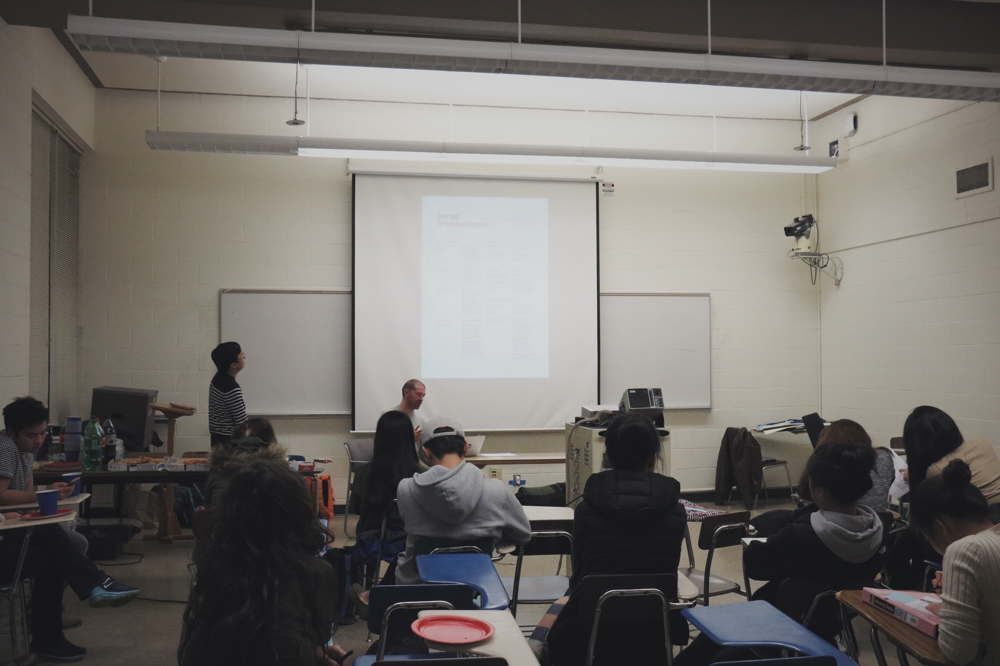 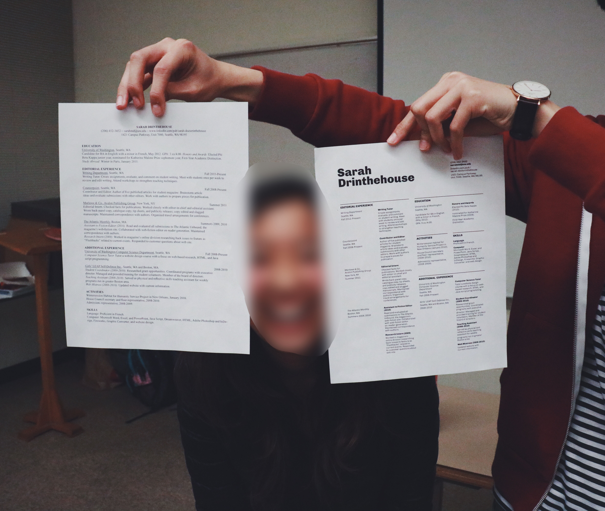Feb 11th, 2016 // Thursday – Major Panel: Design + Informatics + Human Centered Design Engineering
We have a group of panelists from various design-related majors in UW to share their stories and answer questions.
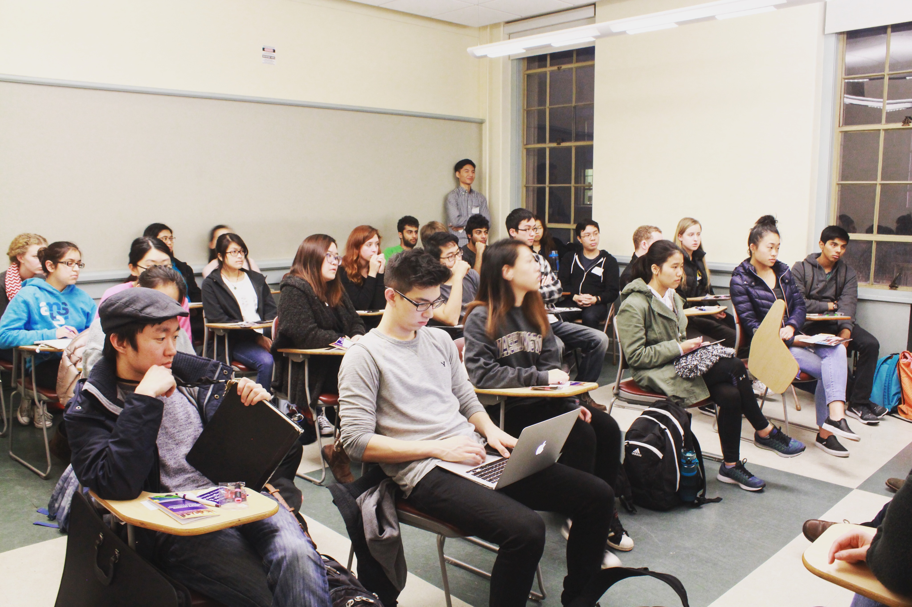 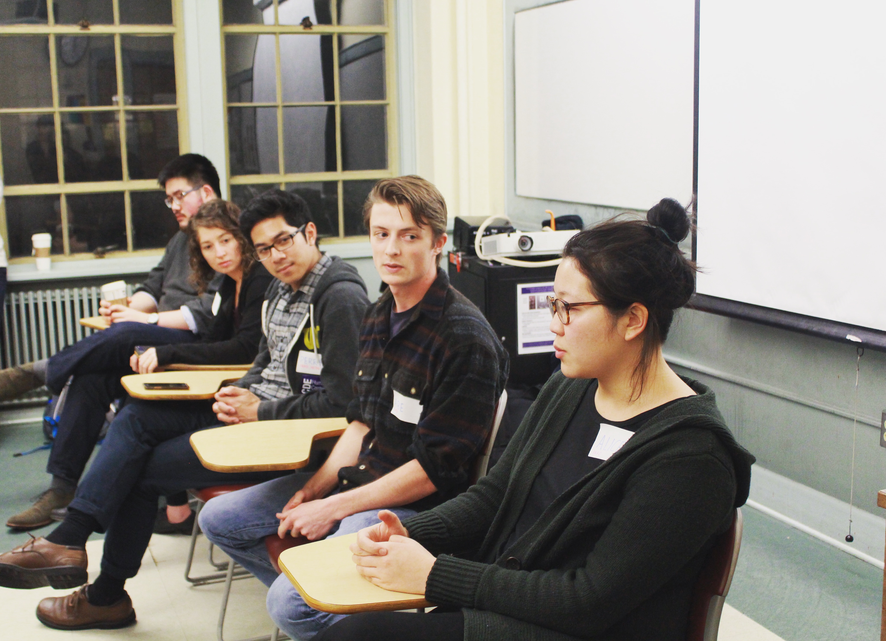 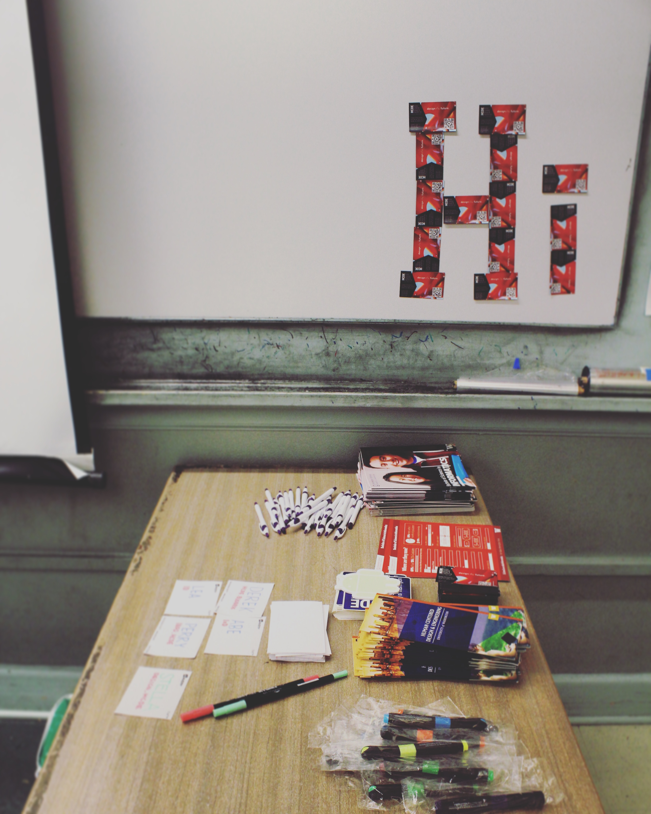Apr 5th, 2016 // Tuesday – General Meeting + Design Challenge
A meeting to introduce Pixel Husky and talked about our upcoming events for the rest of winter quarter. We did a little sketching exercises as warm-up to transition to a design challenge: design a uber service for dogs.
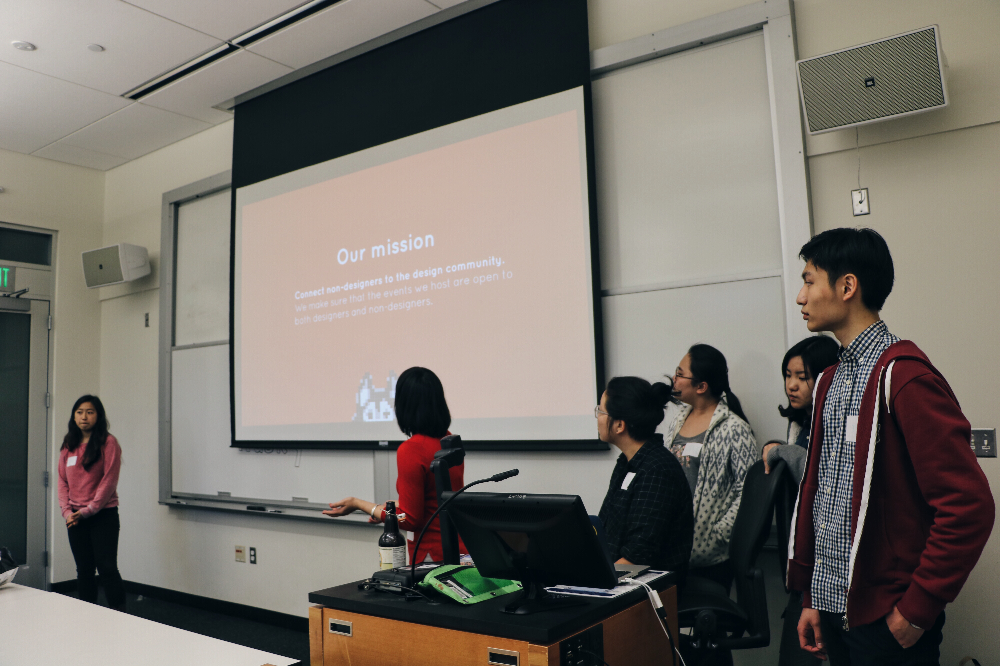 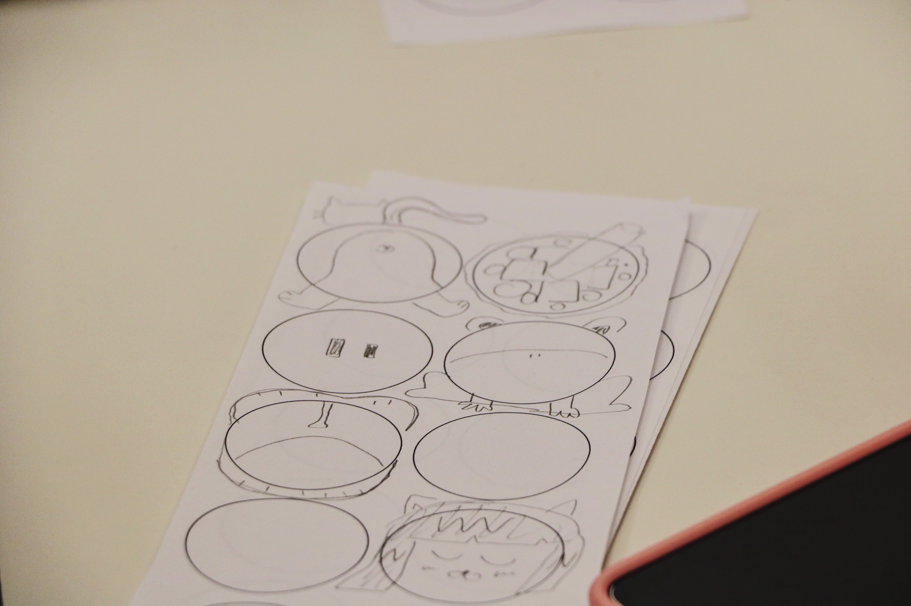 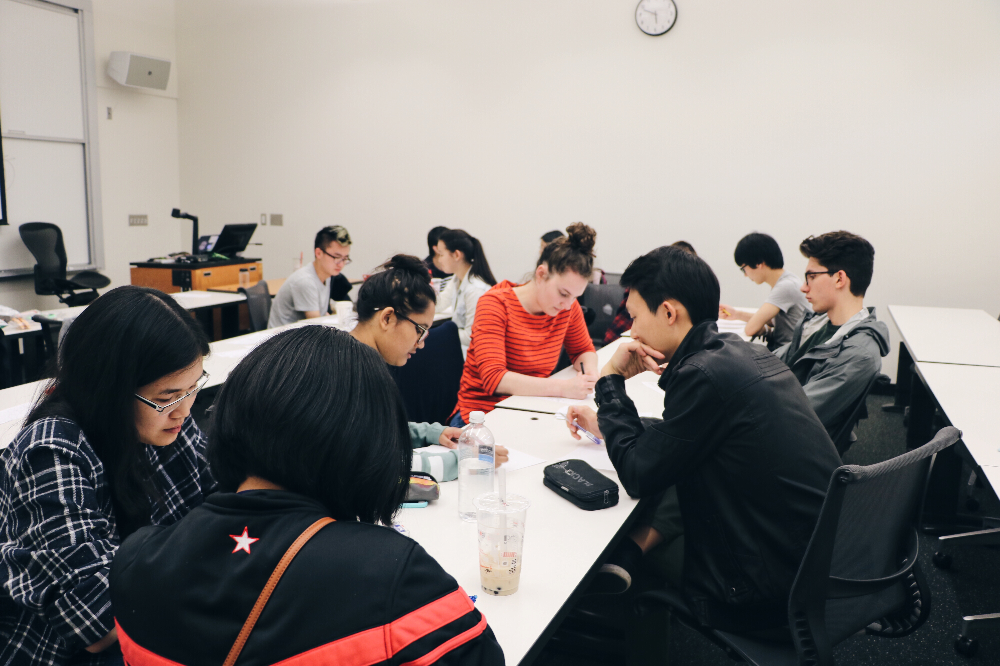 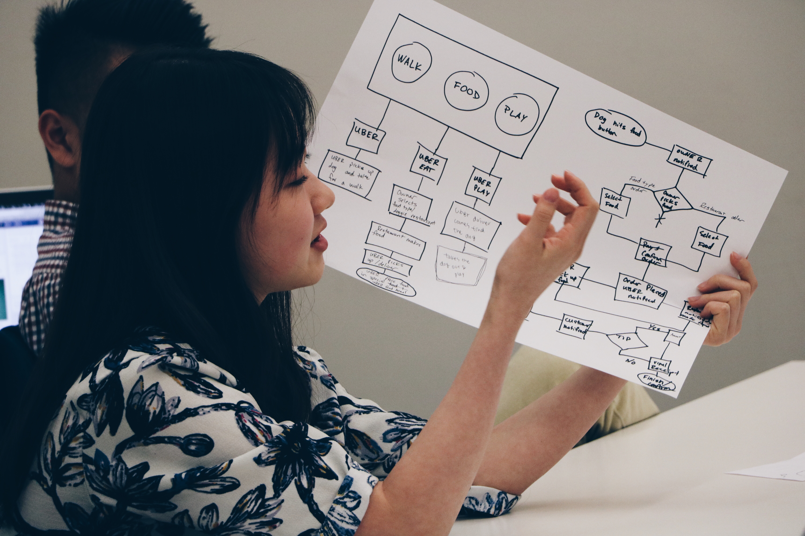Apr 19th, 2016 // Tuesday – Design when shipping
This event talks about ten techniques designers and non-designers use in order to ship designs that everyone is proud of.
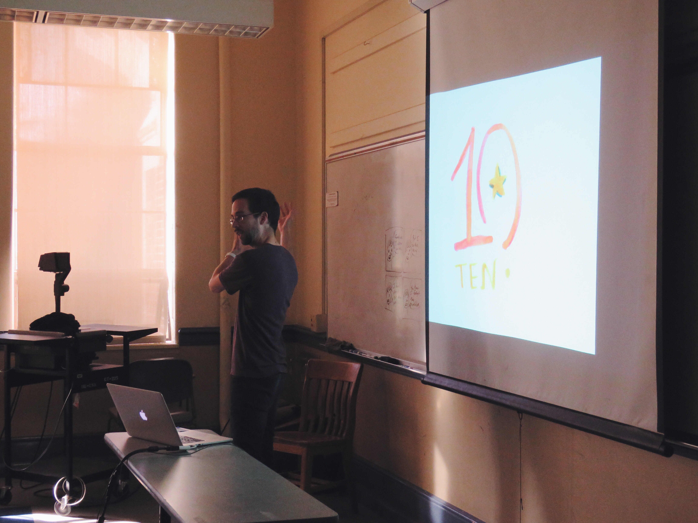 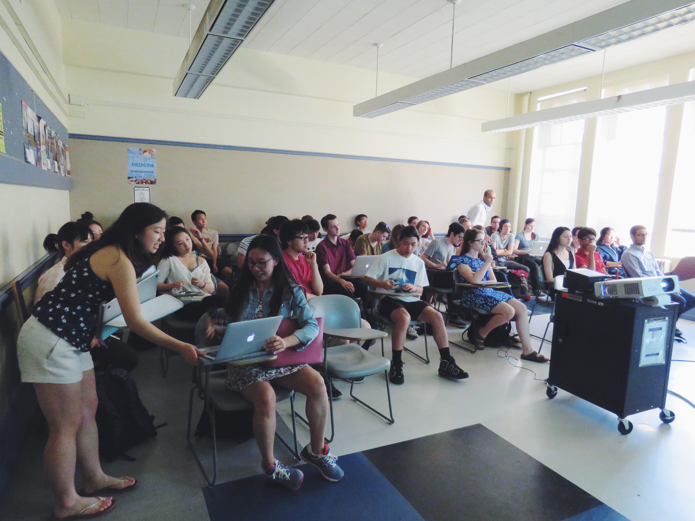May 3rd, 2016 // Tuesday – Design in Virtual Reality
For this event, we are fortunate to have Pete Moss, the "VR guy" at Unity, to talk about how to design in virtual reality.